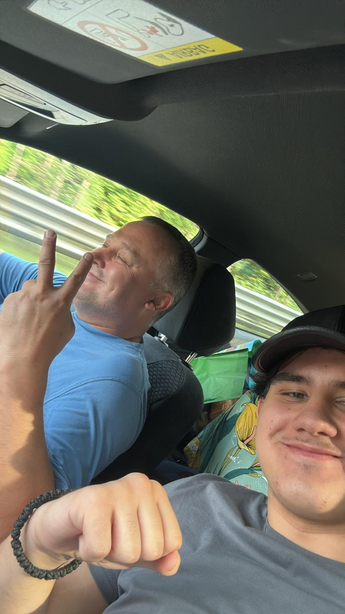
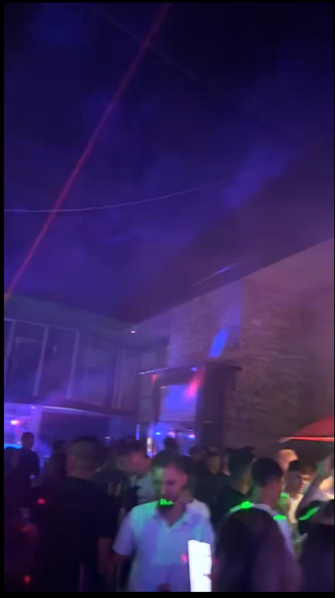
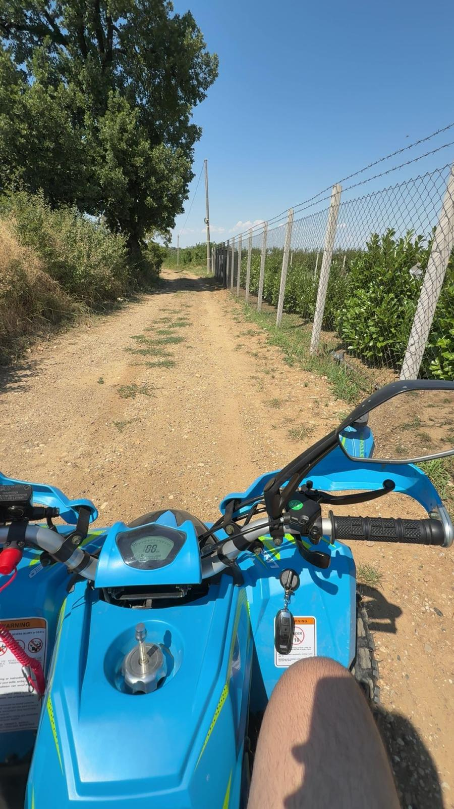

My first highlight was traveling to Serbia by car with my father. We drove alone because my mother and my brother had fewer holidays and came later by plane.

We stopped many times to buy drinks and snacks. There was surprisingly very little traffic, which made the trip much easier. It rained a lot during the drive, almost all the time.
We drove through Switzerland, Germany, Austria, Slovenia, Croatia, and Serbia. I really enjoyed this trip because I normally do not spend such a long time alone with my father. I felt like I got to know him on a completely different level.
My second highlight was going to a club in Serbia called Delfin. It was a bit far away, but that was not a problem. I went home together with my cousin after the club.

It was a very good night, and the club was partly open, which made it perfect for summer.
My last highlight was spending the last four days of our holidays in Lido di Jesolo. It is about halfway between Serbia and Switzerland.
It was very fun and beautiful, and the best part was that the whole family was there. In the evenings, we mostly went out to eat, which was a nice change and very relaxing.
My lowlight happened when I was riding my cousin’s quad. At first, everything was fine. On the way back, my cousin drove, and he took a curve too fast.

We crashed into a pole, and I injured my thigh. We went to the pharmacy, where I got an ointment and a bandage.
Luckily, I could still walk more or less normally. The injury healed over time, and everything turned out fine in the end.
,n